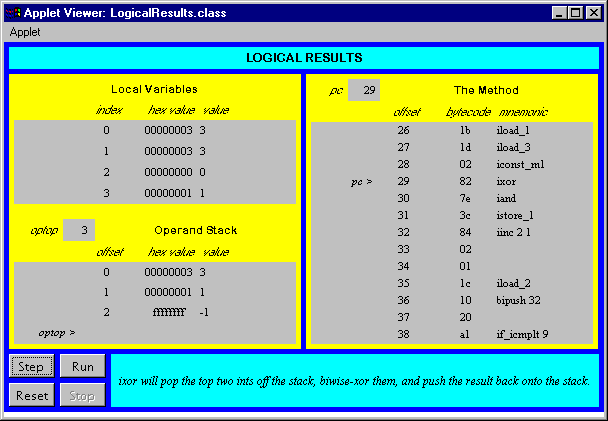

Any use of this Beta Book is subject to the rules stated in the Terms of Use.
| © 1997 The McGraw-Hill Companies, Inc. All rights reserved. Any use of this Beta Book is subject to the rules stated in the Terms of Use. | |
This chapter describes the instructions that perform bitwise logical operations inside the Java Virtual Machine. These instructions include opcodes to perform shifting and boolean operations on integers. The boolean operations are performed on individual bits of integer values.
Accompanying this chapter on the CD-ROM is an applet that interactively illustrates the material presented in the chapter. The applet, named Logical Results, simulates the Java Virtual Machine executing a method that includes uses several of the logic opcodes. At the end of this chapter, you will find a description of this applet and the bytecodes it executes.
The Logic Opcodes
The Java Virtual Machine's logic capabilities operate on ints and longs. These operations treat ints and longs not so much as signed two's-complement numbers, necessarily, but as generic bit patterns. Integer shifting is accomplished via the ishl, ishr, and iushr opcodes. Java's operator is implemented by ishl. The operator is implemented by ishr, and the operator is implemented by iushl. The difference between ishr and iushr is that only ishr does sign extension. Table 13-1 shows the instructions that shift ints left and right.
Table 13-1. Shifting ints
| Opcode | Operand(s) | Description |
| ishl | (none) | shifts int left |
| ishr | (none) | arithmetic shifts int right |
| iushr | (none) | logical shifts int right |
Table 13-2 shows the instructions that shift longs left and right.
Table 13-2. Shifting longs
| Opcode | Operand(s) | Description |
| lshl | (none) | shifts long left |
| lshr | (none) | arithmetic shifts long right |
| lushr | (none) | logical shifts long right |
The opcodes shown in Table 13-3 perform bitwise logical operations on ints. The opcodes implement Java's &, |, and ^ operators.
Table 13-3. Bitwise logical operations on ints
| Opcode | Operand(s) | Description |
| iand | (none) | boolean ands two ints |
| ior | (none) | boolean ors two ints |
| ixor | (none) | boolean xors two ints |
Table 13-4 shows the opcodes that perform bitwise logical operations on longs.
Table 13-4. Bitwise logical operations on longs
| Opcode | Operand(s) | Description |
| land | (none) | boolean ands two longs |
| lor | (none) | boolean ors two longs |
| lxor | (none) | boolean xors two longs |
As mentioned in previous chapters, there is no native boolean type in the Java Virtual Machine. The Java Virtual Machine uses ints to represent booleans. The instruction set includes many instructions that decide whether or not to jump based on an int value interpreted as a boolean. This instructions are covered in Chapter 16, "Control Flow."
Logical Results: A Simulation
The Logical Results applet, shown in Figure 13-1, demonstrates a Java Virtual Machine executing a sequence of bytecodes. This applet is in a web page on the CD-ROM in file applets/LogicalResults.html. The bytecode sequence in the simulation was generated by javac for the incrementLogically() method of the VulcanCounter class:
begin
// On CD-ROM in file opcodes/ex1/VulcanCounter.javaclass VulcanCounter {
static void incrementLogically() {
int spock = 0;
for (;;) {
int tempSpock = spock;
for (int i = 0; i < 32; ++i) {
int mask = 0x1 i;
if ((tempSpock & mask) == 0) {
tempSpock |= mask; // Change 0 to 1
break;
}
else {
tempSpock &= ~mask; // Change 1 to 0
}
}
spock = tempSpock;
}
}
}
end
The bytecodes generated by javac for incrementLogically() are:
begin
0 iconst_0 // Push int constant 0.1 istore_0 // Pop to local variable 0: int spock = 0;
2 iload_0 // Push local variable 0 (spock).
3 istore_1 // Pop to local variable 1: int tempSpock = spock;
4 iconst_0 // Push int constant 0.
5 istore_2 // Pop to local variable 2: int i = 0;
6 goto 35 // Jump unconditionally ()
9 iconst_1 // Push int constant 1.
10 iload_2 // Push local variable 2 (i).
11 ishl // Arithmetic shift left top int (i) by next
// to top int (1).
12 istore_3 // Pop to local variable 3: int mask = i 0x1;
13 iload_1 // Push local variable 1 (tempSpock).
14 iload_3 // Push local variable 3 (mask).
15 iand // Bitwise AND top two ints: (spock & mask)
16 ifne 26 // Jump if top of stack is not equal to zero:
// if ((spock & mask) == 0) {
19 iload_1 // Push local variable 1 (tempSpock).
20 iload_3 // Push local variable 3 (mask).
21 ior // Bitwise OR top two ints (tempSpock | mask)
22 istore_1 // Pop to local variable 1: tempSpock |= mask;
23 goto 41 // Jump unconditionally (to just after
// inner for): break;
26 iload_1 // Push local variable 1 (tempSpock).
27 iload_3 // Push local variable 3 (mask).
28 iconst_m1 // Push -1.
29 ixor // Bitwise EXCLUSIVE-OR top two ints: ~mask
30 iand // Bitwise AND top two ints: tempSpock & (~mask)
31 istore_1 // Pop to local variable 1: tempSpock &= ~mask;
32 iinc 2 1 // Increment local variable 2 by 1: ++i
35 iload_2 // Push local variable 2 (i).
36 bipush 32 // Push integer constant 32.
38 if_icmplt 9 // Jump (to top of inner for) if "next to top"
// integer is less than "top" integer: i < 32
41 iload_1 // Push local variable 1 (tempSpock)
42 istore_0 // Pop to local variable 0: spock = tempSpock;
43 goto 2 // Jump unconditionally (to top of outer for).
end
The incrementLogically() method repeatedly increments an int without using the + or ++ operators. It uses only the logical operators: &, |, and ~. An increment is accomplished by searching through the bits of the current int, starting with the lowest order bit, and turning ones to zeros. As soon as a one is encountered in the current int, it is changed to zero and the search stops. The resultant int now represents the old int incremented by one. The process is started again on the new int. Each incremented number is stored in the spock variable. spock is local variable zero in the compiled bytecodes, so you can watch local variable zero count 0, 1, 2, 3, and so on.
To drive the Logical Results simulation, use the Step, Reset, Run, and Stop buttons. Each time you press the Step button, the simulator will execute the instruction pointed to by the pc register. If you press the Run button, the simulation will continue with no further coaxing on your part until you press the Stop button. To start the simulation over, press the Reset button. For each step of the simulation, a panel at the bottom of the applet contains an explanation of what the next instruction will do. Happy clicking.

On the CD-ROM
The CD-ROM contains the source code examples from this chapter in the opcodes directory. The Logical Results applet is in a web page on the CD-ROM in file applets/LogicalResults.html. The source code for this applet is found alongside its class files, in the applets/JVMSimulators and applets/JVMSimulators/COM/artima/jvmsim directories.
The Resources Page
For more information about the material presented in this chapter, visit the resources page: http://www.artima.com/insidejvm/logic.html.
COMPUTING MCGRAW-HILL | Beta Books | Contact Us | Order Information | Online Catalog
Computing McGraw-Hill is an imprint of the McGraw-Hill Professional Book Group.